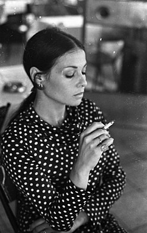
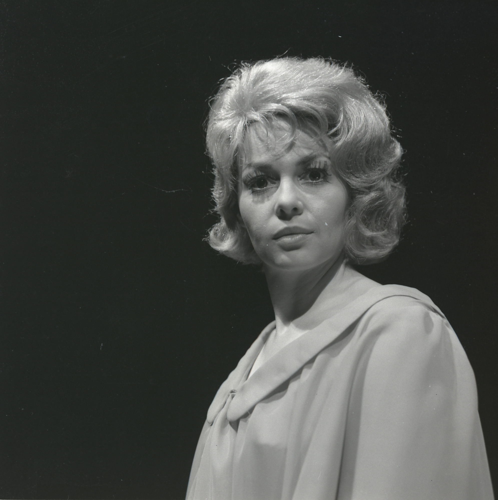
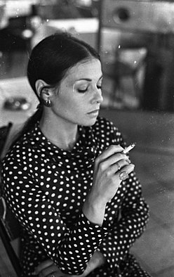
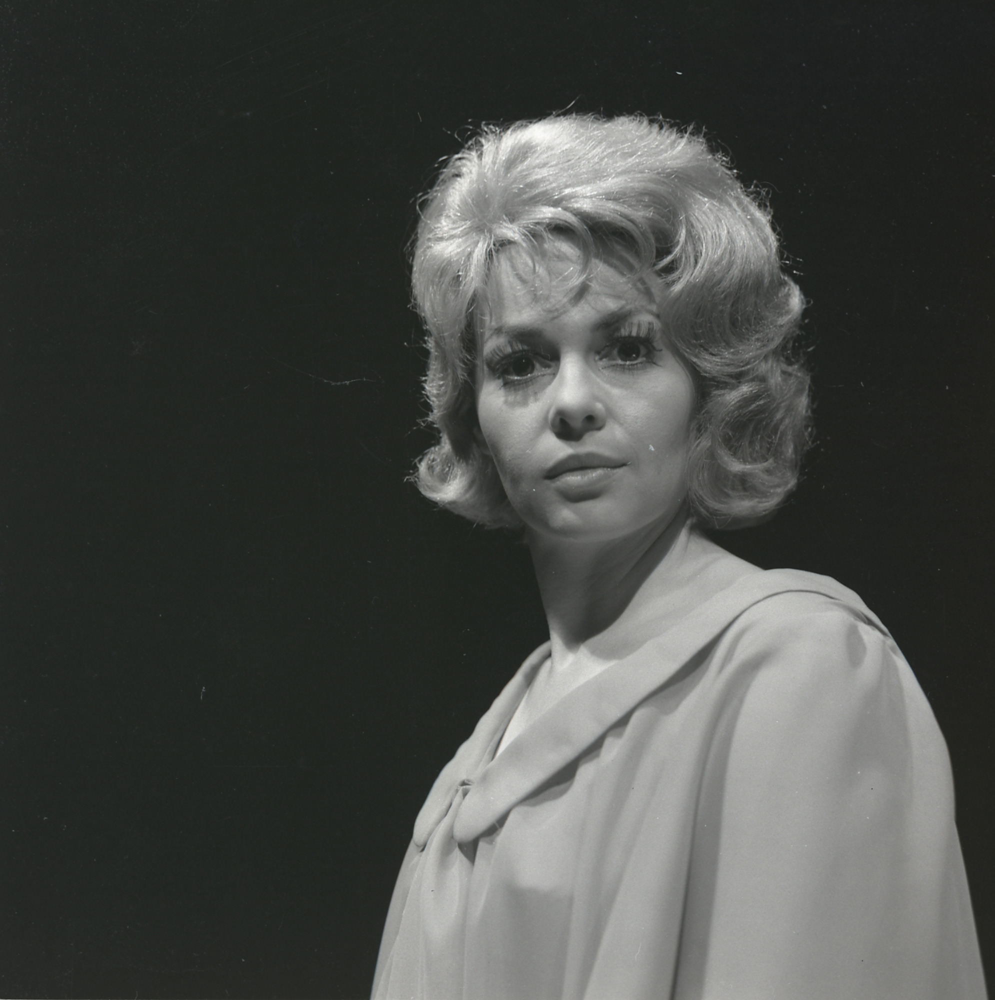

about me
Gila Almagor Agmon (Hebrew: גילה אלמגור אגמון; born Gila Alexandrowitz; July 22, 1939) is an Israeli actress, film star, and author. In Israel, she is known as "queen of the Israeli cinema and theatre".
Gila Alexandrowitz (Almagor) was born in Petah Tikva to Jewish emigrant parents from Europe. Her German-Jewish father Max Alexandrowitz was killed by an Arab sniper while working as a policeman
in Haifafour months before she was born. Her mother Chaya was from a Polish Orthodox Jewish family. Almagor grew up caring for her mother, who was slowly losing her sanity after realising that all
her family in Europe had been murdered in the Holocaust. When her mother was institutionalized in 1954, Almagor was sent to Hadassim youth village.
Two years later, she moved to Tel Aviv, rented a room near Habima Theatre, and applied to acting school. Although she was underage, she was accepted.
At the age of 17, Almagor debuted in Habima's production of The Skin of Our Teeth. Her autobiographical books Summer of Aviya and Under the Domim Tree
were both made into films, with Almagor playing her own mother. She was married to Yaakov Agmon, former director of the Habima Theatre, until his death in 2020.They have two children.
Almagor has played leading roles in many plays, among them Anne Frank, Jeanne d'Arc, The Crucible, Three Sisters, The Bride and the Butterfly Hunt, They Were All My Children, and Medea.
She has appeared in over 50 films, including Siege, Queen of the Road, The House on Chelouche Street, Hide and Seek, El Dorado, Life According to Agfa and The Summer of Aviya.
Almagor starred as the mother of Avner, the main character in the 2005 film Munich. She also appears in The Debt, about a former Mossad agent who comes back to kill an escaped Nazi doctor.
In 2008, she played the role of Lolah Baum in the 100-episode serial Dani Hollywood, broadcast on the Yes satellite network. In 2005, Almagor played a therapist in the award-winning Israeli television series BeTipul.
my photos
 




scan my code